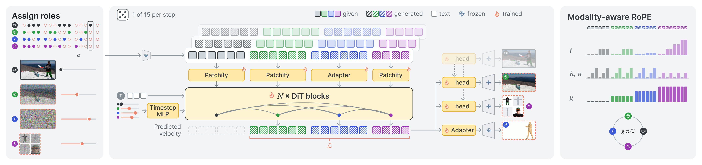

One diffusion transformer learns the joint distribution of a human video and its factors — Video, Scene, 3D Motion and Identity — so generation, controllable generation and decomposition become one model with 15 tasks.
Video, scene and identity views are encoded by the frozen video VAE; motion by a frozen pretrained motion encoder with two linear adapters. All tokens are concatenated into one sequence and processed with full self-attention by a pretrained video DiT; text enters through the backbone's unchanged cross-attention.

No dual branches, fusion modules or experts. The only new parameters are the scene and identity output heads (initialized from the video head) and two linear motion adapters.
The lowest-frequency temporal RoPE pair, constant over any clip, is overwritten with a modality index. Within-modality attention — including pure text-to-video — is mathematically unchanged, while scene and video tokens share exact pixel positions but stay distinguishable. Motion frames sit at fractional positions j/4 to stay in sync with the 4× compressed video latents.
Conditions enter clean (σ = 0); targets are noised at independent levels and are the only ones supervised. Adaptive LayerNorm is generalized from one timestep per sample to one per token, so a single network serves all 15 splits.